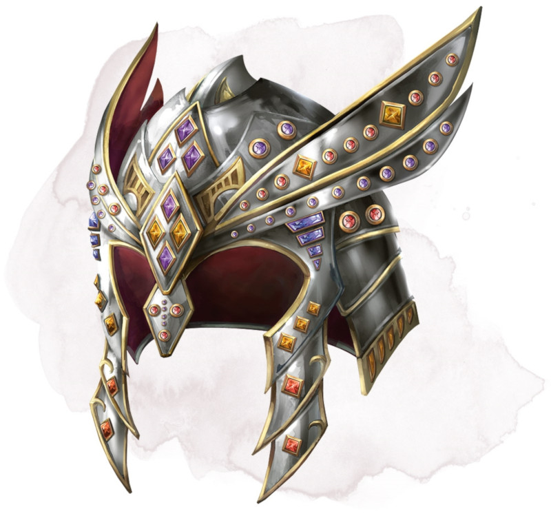

Helm of Brilliance
Wondrous item, very rare (requires attunement)
This dazzling helm is set with 1d10 diamonds, 2d10 rubies, 3d10 fire opals, and 4d10 opals. Any gem pried from the helm crumbles to dust. When all the gems are removed or destroyed, the helm loses its magic.
You gain the following benefits while wearing it:
• You can use an action to cast one of the following spells (save DC 18), using one of the helm's gems of the specified type as a component: daylight (opal), fireball (fire opal), prismatic spray (diamond), or wall of fire (ruby). The gem is destroyed when the spell is cast and disappears from the helm.
• As long as it has at least one diamond, the helm emits dim light in a 30-foot radius when at least one undead is within that area. Any undead that starts its turn in that area takes 1d6 radiant damage.
• As long as the helm has at least one ruby, you have resistance to fire damage.
• As long as the helm has at least one fire opal, you can use an action and speak a command word to cause one weapon you are holding to burst into flames. The flames emit bright light in a 10-foot radius and dim light for an additional 10 feet. The flames are harmless to you and the weapon. When you hit with an attack using the blazing weapon, the target takes an extra 1d6 fire damage. The flames last until you use a bonus action to speak the command word again or until you drop or stow the weapon.
Roll a d20 if you are wearing the helm and take fire damage as a result of failing a saving throw against a spell. On a roll of 1, the helm emits beams of light from its remaining gems. Each creature within 60 feet of the helm other than you must succeed on a DC 17 Dexterity saving throw or be struck by a beam, taking radiant damage equal to the number of gems in the helm. The helm and its gems are then destroyed.
You gain the following benefits while wearing it:
• You can use an action to cast one of the following spells (save DC 18), using one of the helm's gems of the specified type as a component: daylight (opal), fireball (fire opal), prismatic spray (diamond), or wall of fire (ruby). The gem is destroyed when the spell is cast and disappears from the helm.
• As long as it has at least one diamond, the helm emits dim light in a 30-foot radius when at least one undead is within that area. Any undead that starts its turn in that area takes 1d6 radiant damage.
• As long as the helm has at least one ruby, you have resistance to fire damage.
• As long as the helm has at least one fire opal, you can use an action and speak a command word to cause one weapon you are holding to burst into flames. The flames emit bright light in a 10-foot radius and dim light for an additional 10 feet. The flames are harmless to you and the weapon. When you hit with an attack using the blazing weapon, the target takes an extra 1d6 fire damage. The flames last until you use a bonus action to speak the command word again or until you drop or stow the weapon.
Roll a d20 if you are wearing the helm and take fire damage as a result of failing a saving throw against a spell. On a roll of 1, the helm emits beams of light from its remaining gems. Each creature within 60 feet of the helm other than you must succeed on a DC 17 Dexterity saving throw or be struck by a beam, taking radiant damage equal to the number of gems in the helm. The helm and its gems are then destroyed.
Dungeon Master´s Guide (SRD)
